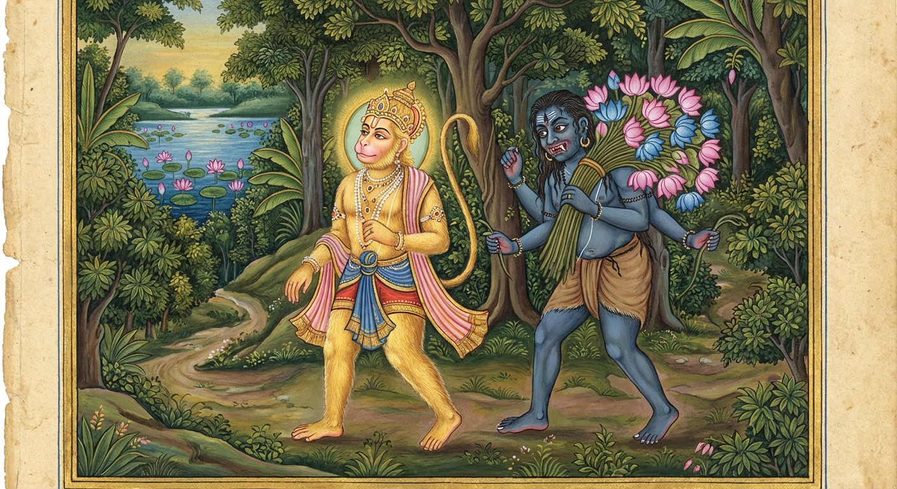

8. තයෝධම්ම ජාතකය (58)
“යස්ස එතෙ” (යමෙකුට මේ කරුණු) යනුවෙන් ඇරඹෙන මේ ධර්ම දේශනාව, බුදුරජාණන් වහන්සේ වේළුවනාරාමයෙහි වැඩ වසන සේක්, (දේවදත්ත තෙරුන් කළ) ඝාතන ප්රයත්නයක් අරබයා වදාළ සේක.
පෙර බරණැස බ්රහ්මදත්ත රජු රජ කරන සමයෙහි, දේවදත්තයන් වඳුරු යෝනියෙහි උපත ලබා හිමාලය ප්රදේශයෙහි වඳුරු රංචුවක් පාලනය කරමින් විසුවේය. ඔහු තමන්ට දාව උපන් වඳුරු පැටවුන් වැඩිවියට පත් වූ විට වඳුරු රංචුව පාලනය කරනු ඇතැයි යන බියෙන්, ඔවුන්ගේ දත්වලින් සපා අණ්ඩ කෝෂ උපුටා දමයි. එකල බෝධිසත්ත්වයෝ ද එම වඳුරු නායකයා නිසාම එක් වැඳිරියකගේ කුසෙහි පිළිසිඳ ගත්හ. එකල්හි ඒ වැඳිරිය ගැබ පිහිටි බව දැන තම ගැබ රැක ගනු රිසියෙන් වෙනත් පර්වත පාමුලකට ගියාය. ඇය ගැබ් මෝරා බෝසතුන් බිහි කළාය. හෙතෙම වැඩිවියට පත් වූයේ, නුවණින් යුක්ත වූයේ, කායික ශක්තියෙන් සම්පන්න වූයේය. බෝසත්හු එක් දවසක් මවගෙන් “මෑණියනි, මගේ පියා කොහි ද?” යි විමසූහ. “දරුව, අසවල් පර්වත පාමුල වඳුරු රංචුව පාලනය කරමින් වාසය කරයි” යි ඇය කීවාය. “මෑණියනි, එසේ නම් මා ඔහු වෙත පමුණුවනු මැනවි” යි කීහ. “දරුව, ඔබව පියා වෙත කැඳවාගෙන යා නොහැකිය. එහි ගිය විට ඔබගේ පියා තමා නිසා උපන් වානර පොව්වන් රංචුව පාලනය කරනු ඇතැයි බියෙන් දතින් සපා අණ්ඩ කෝෂ කඩා දමයි” යි ඇය කීවාය. එවිට බෝසත්හු “මෑණියනි, මා ඔහු වෙත පමුණුවනු මැනවි. මම කළ යුත්ත දනිමි” යි පැවසූහ.
වැඳිරිය පුත්රයා රැගෙන ඔහු වෙත ගියාය. ඒ වඳුරු නායකයා තමාගේ පුතා දැක, “මොහු වැඩිවියට පත් කල්හි මට වඳුරු රංචුව පාලනය කිරීමට ඉඩ නොදෙයි. දැන්ම මොහු මරා දැමිය යුතුය” යි සිතා, “දරුව, එන්න, මෙතෙක් කල් කොහි ගියේ දැයි?” අසමින් බෝසතුන් වැළඳ ගන්නා මුවාවෙන් තදින් තෙරපීය. බෝසත්හු වනාහි ඇතකුගේ ශක්ති ඇත්තාහ. එබැවින් ඔහු ද වඳුරු නායකයාව තෙරපීය. එවිට වඳුරු නායකයාගේ ඇට බිඳෙනා තත්වයට පත්විය. අනතුරුව ඔහුට මෙසේ සිතුණි: “මොහු වැඩුණේ නම් මා මරන්නේය. ඊට පෙරාතුව ම කෙසේ හෝ මොහු මරන්නෙමි. මේ ළඟ රාක්ෂයෙකු අරක් ගත් විලක් ඇත. එහි රකුසා ලවා මොහු විනාශ කරවමි.” ඉක්බිති, පුත්රයාට මෙසේ කීවේය: “දරුව, මම දැන් මහල්ලෙක්මි. මේ වඳුරු රංචුව ඔබට පවරා දෙමි. අද ම ඔබ රජ කරවමි. අසවල් තැන විලක් ඇත. එහි කුමුදු මල් දෙකක් ද, උපුල් මල් තුනක් ද, පියුම් මල් පහක් ද පිපේ. දරුව, යන්න. එයින් මල් ගෙන එන්න.” “පියාණෙනි, යහපත. ගෙන එන්නෙමි” යි බෝසත්හු එහි ගොස් වහා විලට නොබැස අවට පා සටහන් විමසන්නේ, විලට බැසපු පියවර ම දුටහ; ගොඩට පැමිණි පියවර නොදුටහ. ඔහු, “මේ විල රකුසකු විසින් අරක් ගත් විලක් විය යුතුයි. මගේ පියාට තනිව මා මැරීමට නොහැකි වූ නිසා රකුසාට මා බිළි දෙනු කැමැත්තේ වන්නේය. මම මේ විලට ද නොබසිමි; මල් ද ගනිමි” යි සිතා, දිය නැති උස් තැනකට ගොස් වේග ගන්වා උඩට පැන එතරට යන්නේ දිය නැති අහසෙහි පිහිටියා වූ මල් දෙකක් ගෙන එතරට පැන්නේය. එතර සිට මෙතරට එන්නේ ද ඒ අයුරෙන් ම මල් දෙකක් ගත්තේය. මෙසේ දෙපසෙහි රැස් කරමින් මල් ගත්තේය. රකුසාගේ අණසකට යටත් වූ පෙදෙසට පය නොතැබුවේය.
ඉක්බිති, ඒ මල් ගෙන එක් තැනකට රැස් කරන කල්හි ඒ රකුසා, “මම මෙතෙක් කලකට මෙබඳු වූ නැණවත්, ආශ්චර්යමත් පුරුෂයකු නුදුටු විරූ ය. ඔහු විසින් මල් ද කැමති තාක් ගන්නා ලදී. මගේ අණ පවතින අඩවියට ද නොබැස්සේය” යි සිතා, ජලය දෙබෑ කොට ජලයෙන් උඩට අවුත් බෝසතුන් වෙත පැමිණ, “වඳුරු රජතුමනි, මේ ලෝකයෙහි යමකුට ධර්මතා තුනක් ඇත්තේ ද හෙතෙම සියලු සතුරන් මැඩ පවත්වයි. ඔබගේ ඇතුළත මේ සියලු ගුණ ධර්ම ඇතැයි සිතමි” යි පවසා, බෝසතුන්ට ස්තුති කරමින් මේ ගාථාව කීවේය.
“වානර රජතුමනි, දක්ෂතාවය (කායික මානසික ශක්තිය) ද, නිර්භය භාවය ද, උපාය කෞශල්ය ඥානය ද යන මේ කරුණු තුන ඔබ තුළ මෙන් යමෙකු තුළ පවතී ද, හෙතෙම සතුරා අභිබවා යයි.”
එහි “දක්ඛිය” යනු දක්ෂ බවයි; පැමිණි බිය නැති කිරීමට දන්නා වූ නුවණින් යුක්ත වූ උතුම් වීර්යයට මේ නමකි. “සූරිය” යනු ශූර බවයි; බිය නැති බවට (නිර්භීතකමට) මේ නමකි. “පඤ්ඤා” යනු කටයුතු සම්පාදනය කිරීමට නිසි වූ තැනට සුදුසු වූ උපාය නුවණට මේ නමකි.
මෙසේ ඒ දිය රකුසා මේ ගාථාවෙන් බෝසතුන්ට ස්තුති කොට, “මේ මල් කුමක් සඳහා ගෙන යන්නෙහි දැ?” යි විචාළේය. “මගේ පියා මා රජ කරවනු කැමැත්තෙන් සිටියි; මේ මල් ඒ සඳහා ගෙන යමි” යි බෝසත්හු කීහ. “ඔබ වැනි වූ උතුම් පුරුෂයකු විසින් මල් ගෙන යාම සුදුසු නොවෙයි. මම ගෙන යමි” යි කියා රකුසා මල් ඔසවාගෙන ඔහුගේ පසුපස ගියේය. ඉක්බිති ඔහුගේ පියා දුර දී ම ඔහු දැක, “මම මොහු රකුසාට ගොදුරු වන්නේ යැයි සිතා යැවීමි. නමුත් හෙතෙම දැන් රකුසා ලවා මල් ගෙන්වා ගෙන එයි. දැන් මම විනාශ වූයෙමි” යි සිතත් ම, (ශෝකය නිසා) හදවත හත් කඩකට පැලී එහි ම මරණයට පත්විය. සෙසු වඳුරෝ රැස්ව බෝසතුන් රජ තනතුරෙහි පිහිටවූහ.

බුදුරජාණන් වහන්සේ මේ ධර්ම දේශනාව ගෙනහැර දක්වා පූර්වාපර සන්ධි ගළපා ජාතකය සමාප්ත කළ සේක. “එකල වඳුරු නායකයා වූයේ දේවදත්ත ය. ඔහුගේ පුත්රයා වූයේ මම ම වෙමි.”
අටවන වූ තයෝධම්ම ජාතක වර්ණනාව යි.